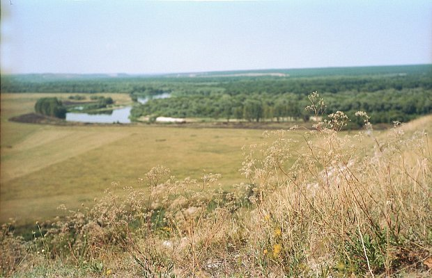

Берегите Природу
Дивногорье
Дивногорье – музей-заповедник
под открытым небом в Воронежской области.
Его площадь составляет 11 км².
Херносев
Херсонес Таврический является одной из самых
известных и популярных
достопримечательностей Севастополя.
Озёрный Край
Озерный край — заповедник в Северо-Западной Англии,
основан в 1951 году.
Озерный край расположен между границей Шотландии,
Приокско-Террасный
Приокско-Террасный заповедник,
расположенный в Подмосковье,
в Серпуховском районе, на левом берегу Оки,
представляет собой уникальный природоохранный объект.